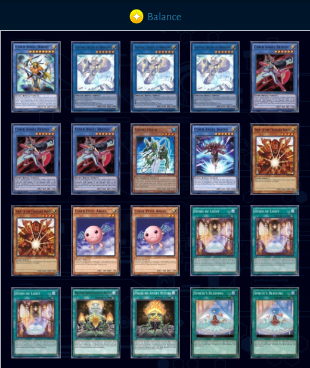

Cyber Angels is a ritual deck that finds wins through controlling the board and overwhelming the opponent through resource management. The deck has traditionally been considered an OTK deck, but thanks to the addition of Saffira, Queen of Dragons, CA is capable of fostering different playstyles while retaining OTK potential
Your approach with cyber angels is to summon you boss monsters early and use them to generate advantage by drawing from the deck and recycling from your grave. If your opponent cannot win the lottery on which cards they need to shut down your Saffira and Cyber Angel Dakini early or are incapable of getting an OTK, victory is all but assured.
